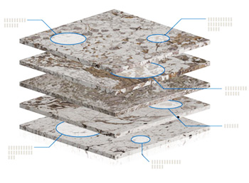
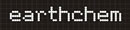

Welcome to MetPetDB

MetPetDB is a database for metamorphic petrology that is being designed and built by a global community of metamorphic petrologists in collaboration with computer scientists at Rensselaer Polytechnic Institute as part of the National Cyberinfrastructure Initiative and supported by the National Science Foundation.
This project will support the development, implementation and population of MetPetDB with the purpose of:
- archiving published data,
- storing new data for ready access to researchers and students,
- facilitating the gathering of information for researchers beginning new projects,
- providing a search mechanism for data relating to anywhere on the globe,
- providing a platform for collaborative studies among researchers, and
- serving as a portal for students beginning their studies of metamorphic geology.
Read more about the MetPetDB project here.
Other Databases
| Advanced Data Management in Solid Earth Geochemistry |
Petrological Database of the Ocean Floor |
The Western North American Volcanic and Intrusive Rock Database |
Geochemistry of Rocks of the Ocean and Continents |
System for Earth Sample Registration |